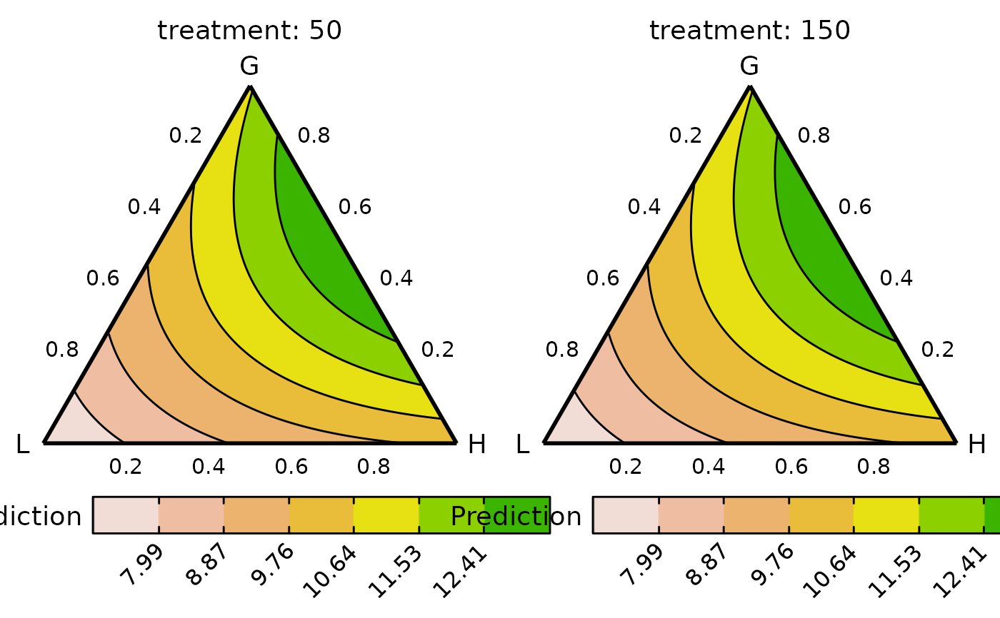

Conditional ternary diagrams at functional group level
grouped_ternary_plot.RdThe helper function for plotting grouped ternary diagrams. The output of
the `grouped_ternary_data` with the compositional variables
combined into groups should be passed here to be visualised on a 2-d ternary diagram.
These are very useful when we have multiple compositional variables that can
be grouped together by some hierarchical grouping structure. For example, grouping
species in a ecosystem based on the functions they perform, or grouping
political parties based on their national alliances.
Usage
grouped_ternary_plot(
data,
col_var = ".Pred",
nlevels = 7,
colours = NULL,
lower_lim = NULL,
upper_lim = NULL,
tern_labels = colnames(data)[1:3],
contour_text = FALSE,
show_axis_labels = TRUE,
show_axis_guides = FALSE,
axis_label_size = 4,
vertex_label_size = 5,
nrow = 0,
ncol = 0
)Arguments
- data
A data-frame which is the output of the `conditional_ternary_data` function.
- col_var
The column name containing the variable to be used for colouring the contours or points. The default is ".Pred".
- nlevels
The number of levels to show on the contour map.
- colours
A character vector or function specifying the colours for the contour map or points. The number of colours should be same as `nlevels` if (`show = "contours"`).
The default colours scheme is theterrain.colors()for continuous variables and an extended version of the Okabe-Ito colour scale for categorical variables.- lower_lim
A number to set a custom lower limit for the contour (if `show = "contours"`). The default is minimum of the prediction.
- upper_lim
A number to set a custom upper limit for the contour (if `show = "contours"`). The default is maximum of the prediction.
- tern_labels
A character vector containing the labels of the vertices of the ternary. The default is the column names of the first three columns of the data, with the first column corresponding to the top vertex, second column corresponding to the left vertex and the third column corresponding to the right vertex of the ternary.
- contour_text
A boolean value indicating whether to include labels on the contour lines showing their values (if `show = "contours"`). The default is
FALSE.- show_axis_labels
A boolean value indicating whether to show axis labels along the edges of the ternary. The default is
TRUE.- show_axis_guides
A boolean value indicating whether to show axis guides within the interior of the ternary. The default is
FALSE.- axis_label_size
A numeric value to adjust the size of the axis labels in the ternary plot. The default size is 4.
- vertex_label_size
A numeric value to adjust the size of the vertex labels in the ternary plot. The default size is 5.
- nrow
Number of rows in which to arrange the final plot (when `add_var` is specified).
- ncol
Number of columns in which to arrange the final plot (when `add_var` is specified).
Value
A ggmultiplot (ggplot if single plot is returned) class object or data-frame (if `plot = FALSE`)
Examples
library(DImodels)
## Load data
data(sim3)
## Fit model
mod <- glm(response ~ 0 + (p1 + p2 + p3 + p4 + p5 + p6 + p7 + p8 + p9)^2,
data = sim3)
## Create data
## We have nine (p1 to p9) variables here and using conditional_ternary
## to visualise the simplex space won't be very helpful as there are too
## variables to condition on
## Instead we group the nine-variables into three groups called "G", "L" and "H"
plot_data <- grouped_ternary_data(model = mod,
prop = paste0("p", 1:9),
FG = c("G","G","G","G","G","L","L","H","H"),
resolution = 1)
#> Warning: The proportional split of species in the groups was not specified in `values`,
#> assuming an equal split for species in each group.
#> ✔ Finished data preparation.
grouped_ternary_plot(plot_data)
#> ✔ Created plot.
## By default the variables within a group take up an equal share of the
## group proportion. So for example, each point along the above ternary
## would have a 50:50 split of the variables in the group "L" or "H", thus
## the vertex where "L" is 1, would mean that p6 and p7 are 0.5 each,
## similarly, the vertex "H" is made up of 0.5 of p8 and p9 while the "G"
## vertex is comprised of 0.2 of each of p1, p2, p3, p4, and p5. The concepts
## also extend to points along the edges and interior of the ternary.
## Change the proportional split of species within an FG by using `values`
## `values` takes a numeric vector where the position of each element
## describes the proportion of the corresponding species within the
## corresponding FG
## For examples this vector describes, 2-% each of p1, p2, p3, p4 and p5,
## in G, 0% and 100% of p6 and p7, respectively in G2 and 30% and 70% of
## p8 and p9, respectively in G3.
vals <- c(0.2, 0.2, 0.2, 0.2, 0.2,
0, 1,
0.3, 0.7)
plot_data <- grouped_ternary_data(prop = paste0("p", 1:9),
FG = c("G","G","G","G","G","L","L","H","H"),
values = vals,
resolution = 1,
model = mod)
#> ✔ Finished data preparation.
## Change number of contours and colour scheme
grouped_ternary_plot(plot_data,
nlevels = 8,
colours = hcl.colors(8))
#> ✔ Created plot.
## Can also add any additional experimental structures
## Notice .add_str_ID in the data
plot_data <- grouped_ternary_data(prop = paste0("p", 1:9),
FG = c("G","G","G","G","G","L","L","H","H"),
add_var = list("treatment" = c("50", "150")),
values = vals,
model = mod,
resolution = 1)
#> ✔ Finished data preparation.
grouped_ternary_plot(data = plot_data)
#> ✔ Created all plots.
